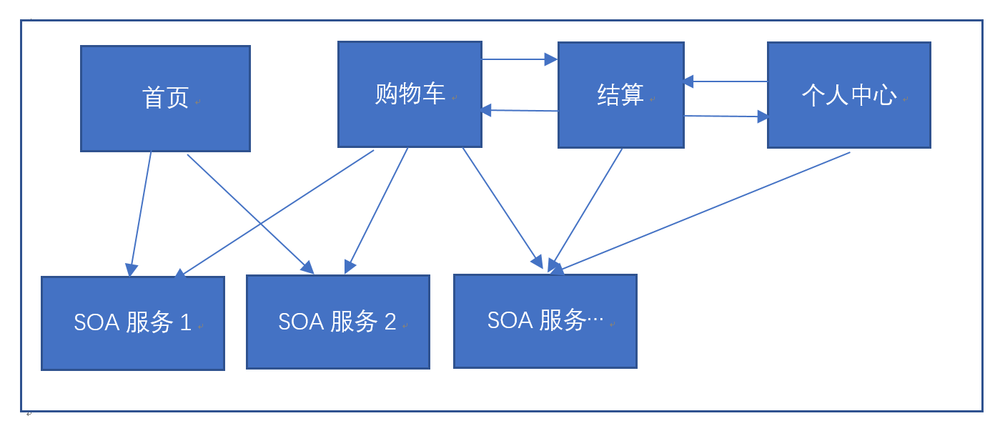
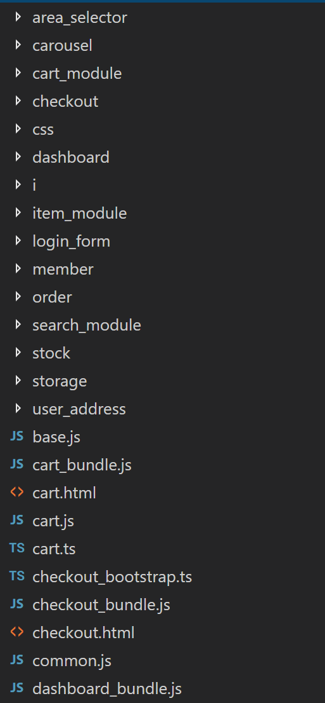

一个b2b站点的设计与实现总结
本篇文档主要讲解一下我们在实现某B2B电商平台时，设计、架构决定的思路，供相关同事参考及评判。
背景
某海外本地B2C电商蓬勃发展的同时，B2B业务也开始落地实施。 B2B平台商业模式与B2C有较大区别，价格体系、会员、商品库、物流都有不同，审核流程多样化，为了独立发展变化，B2B平台决定使用独立站点提供服务，商品、物流等重用现有SOA接口，用户体系重用国内B2B体系部分设计和代码。 项目人员最高期4个（搜索除外），功能包含首页到结算页的购物全流程，以及相关审核工作流及用户管理功能。
延迟高层设计
很多web站点架构设计，在web层就偏向纵向切分模块，比如：  第一行方框都是独立的java web工程，独立域名。可能有如下好处： 1. 独立上线 2. 隔离故障 3. 方便工作划分。
但是我们没有采用这种设计，原因如下：
- 增加了运维工作。
- 我们有后端路由，分批上线服务可以不中断，这种架构似乎也不解决服务中断。
- 上线的难点在于依赖循环和独立模块相互之间的信息同步，这种架构不解决这个问题，反倒加重。
- 其实任意核心模块失败，整个网站功能都是不完整的，对我们的应用来说，不完整的功能和没有功能是一样的。
- Web层的故障原因无非就是内存泄露、资源未关闭等，这些使用findbug等工具都能排查。
- 非整体的故障监控更困难。
- Web层（Spring MVC）只是负责HTTP转发、模板、渲染、rest接口功能，已经是很清晰的划分了。
- 这种模块分离很naïve，只是从业务流程进行划分，但实际上，某些模块是强耦合的，比如购物车和结算页有很多相同的逻辑及约束、交互，这种划分导致了不必要的复杂性，真正的模块是演化出来的（参考《敏捷软件开发：原则、模式与实践》，每个程序员应该把这本书看三遍）。
- 浏览器跨域问题，鼓励了GET删除、更新资源。
- 加大了人员沟通、调试难度。
- 鼓励了不恰当的职责划分和推诿。
我们认为模块及一些高层设计，应该在获得足够业务知识和理解后，再来做。上面只是其中一个例子。
保持简单
相比做一锤子买卖然后在后期不断后悔，我们认为保持简单、持续演化更重要：
- 代码都在一个maven父工程和git仓库，随时保证接口匹配和编译问题，所有人对所有代码负责。
- 强调单元测试驱动设计，而不只是用来保证质量，也不强制要求，减轻思想负担。
- 数据库和redis等schema设计放到代码实现之后，而不是相反。
- 项目目前有三个发布模块，也是最早的三个maven子模块，web前台、web后台和业务功能SOA服务。
- 不按照service、DAO死板的划分maven子模块，也不会有xxx.xxx.enum，xxx.xxx.interface的package结构，因为按照代码类型划分模块是错误，哪怕别人都这么用，错误的就是错误的。
- 使用package和class组织更细粒度模块，优先使用private和protected等可见性。
- 如果有些类会被多个发布模块公用，放到新的maven子模块。
- 发布模块使用了这个类，那么多半也会使用该类所在package及maven module的其他类，否则，要么是这个类（或package）放错了地方，要么是其他类（或package）放错了地方（注意：package和maven模块就这么演化出来了）。
Web UI呈现及交互的设计考虑
我们不使用后端模板渲染复杂的html，这非常难以调试和修改，我们使用angular2及typescript等现代框架、工具加快前端开发，前端设计介绍在下文。
我们只用Spring MVC做URL路由、REST接口、SEO文本替换、全局JS变量填充等。
JSON和HTTP Form对于的model类，常常不能直接对应业务Class（序列化问题或者前端特有的信息字段），我们会新增一个Class表示这种映射，我们管这个叫视图模型类（来自MVVM架构），如CartItemViewModel，相当于UI应用本身的model。
异常处理
入参使用guava库的Precondition检查，直接抛出异常，不要在功能实现代码里处理参数异常或记录日志，谁调用，谁负责。
我们的设计强烈反对错误码，异常直接抛出，谨慎使用checked exception，除非强制调用者关注。
使用Spring的@ControllerAdvice单独捕捉异常，返回错误页面或响应，并在@ExceptionHandler根据异常类型（关键业务异常都有自己的异常子类型），记录日志和报警。 参考： Exception Handling in Spring MVC
对于使用错误码的、不正常返回null的外部接口，全部使用适配器模式重新抛出异常。
后端代码技巧举例
- 在Spring里，推荐大家使用@JsonUnwrapped包装字段而非继承，保证json序列化不会嵌套，省掉一堆get和set构造代码。99%的情况下，组合优于继承，详见《effective java》。
Class B2BOrder { private long b2bUser; @JsonUnwrapped private UserOrder order; } - 使用JAVA 8的Optional表示可能为空的对象，而非直接返回null。
- 空集合（非异常情况）返回Collections.emptyList()等，不要返回null。
- JAVA 8的Stream和Lambda等新特性可以减少大量冗余代码。
- 再次跪求不要返回null，可能没有值就请用Optional，不可能没有值就抛异常，因为null错误往往上线了才被发现。
以上就是我们一个web后端设计的大致介绍，主要强调了如何修改我们之前项目所犯的错误。下面，我讲讲该项目的前端架构。
前端设计
项目组没有专职前端，虽然有现成的一些代码，但考虑到后续发展和修改成本，可能也不比重写快。 但如果使用原生web api或者jquery等简单的库，没法在短时间内完成开发。 新项目和新手，没有负担，反正都是边干边学，我就用最新的前端工具链吧－_－b。
最终选型如下： 框架：angular2 + typescript，构建：webpack2+gulp，包管理：yarn，测试：karma和jest。 结合webpack dev server，可以在没有后端服务的情况下，开发调试前端代码。
后端RESTful设计
JAVA后端提供RESTful接口，每个接口都只做一件事，方便前端代码组合使用。如结算接口设计：
- GET /checkout/item；获取待结算商品列表
- GET /checkout/item/status; 获取待结算商品状态，如打包价格、上下架情况
- GET /checkout/item/freight; 获取总运费
- GET /checkout/cod; 检查是否支持货到付款
- POST /checkout；提交结算
如果采用粗粒度接口，后端代码难以维护，前端代码则:
- 难以使用组合，构成更强大、定制化的接口。
- 难以处理错误，错误的区分、提示比较麻烦。
Angular的工程实践
可能是angular官方例子的问题，很多人认为angular只适合单页应用，其实多个单页应用就是多页应用了。 我使用多个webpack entry，打包出多个单页应用来。 各种bundle就是我们的独立前端应用，如购物车、结算页等。
module.exports = {
entry: {
'vendor_bundle': './src/vendor.ts',
'polyfills_bundle': './src/polyfills.ts',
'common_bundle': './src/common.js',
'login_bundle': './src/login_bundle.js',
'index_bundle': './src/index_bundle.js',
'search_bundle': './src/search_bundle.js',
'cart_bundle': './src/cart_bundle.js',
'item_bundle': './src/item_bundle.js',
'checkout_bundle': './src/checkout_bundle.js',
'order_bundle': './src/order_bundle.js',
'dashboard_bundle': './src/dashboard_bundle.js'
}
...
}
一般一个bundle就是一个独立的angular module，如order_bundle.js:
require('./css/base.less');
require('./css/my.less');
require('./order.html');
require('./order/order_app.html');
require('./order/my_order.html');
require('./order/my_audit.html');
require('./order/audit_config.html');
require('./order/audit_files.html');
require('./order_bootstrap.ts');
前端模块的设计考虑
模块不是简单按照页面单位来区分的，和后端代码一样，很多代码并不是简单的属于一个模块，比如购物车功能，结算页需要使用购物车代码获取当前结算项目、结算完成后需要调用购物车接口清除购物车，商品代码则从头到尾都需要使用。
但是，前端代码的模块划分没有JAVA工程那么细化，因为webpack使用es2015的module打包，不会引入无关代码到最终发布代码里，所以按照业务创建文件夹（模块）问题不大，单页应用间相互引用就可以实现代码重用。如：

可以看到模块（文件夹）划分是按高层业务划分的。 JAVA的maven则不行，如果引用了一个maven module，所有class都会被包含到编译结果里。
Typescript和es5的使用
Angular解决了大部分交互和渲染问题，这里不做详细介绍，angular基础功能已经满足大部分需求。倒是typescript和es5，给我带来很多惊喜，举几个例子：
- 泛型。
- ts的匿名类型(duck type)，可以在参数里快速定义类型（如{name: string, quantity: number}），而不用单独定义class或interface。
- typescript string interpolation，组装字符串很好用。
- map和set。
- copy语法，let invoice = { ...userInvoice }; 快速生成全新对象
- ts的async and await异步编程模型。
在以上设计决策指导下，我们按时保证了项目的提交。同时，我们证明：
- 简单、良好的代码设计可以节省大量调试、测试时间。
- 不要教条主义，拿出证据说服自己。